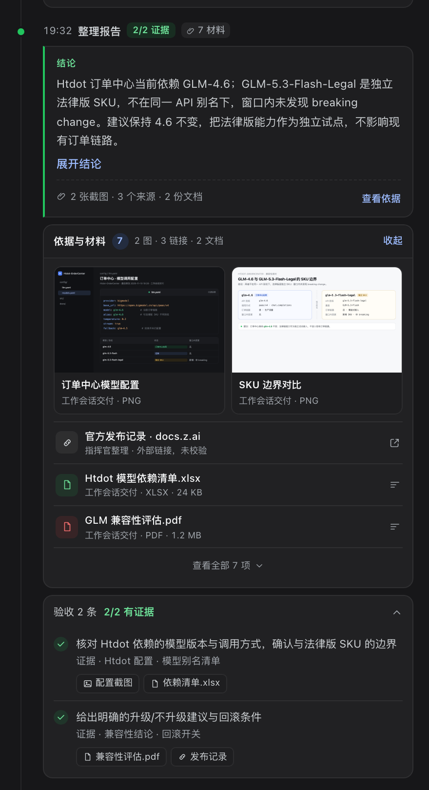
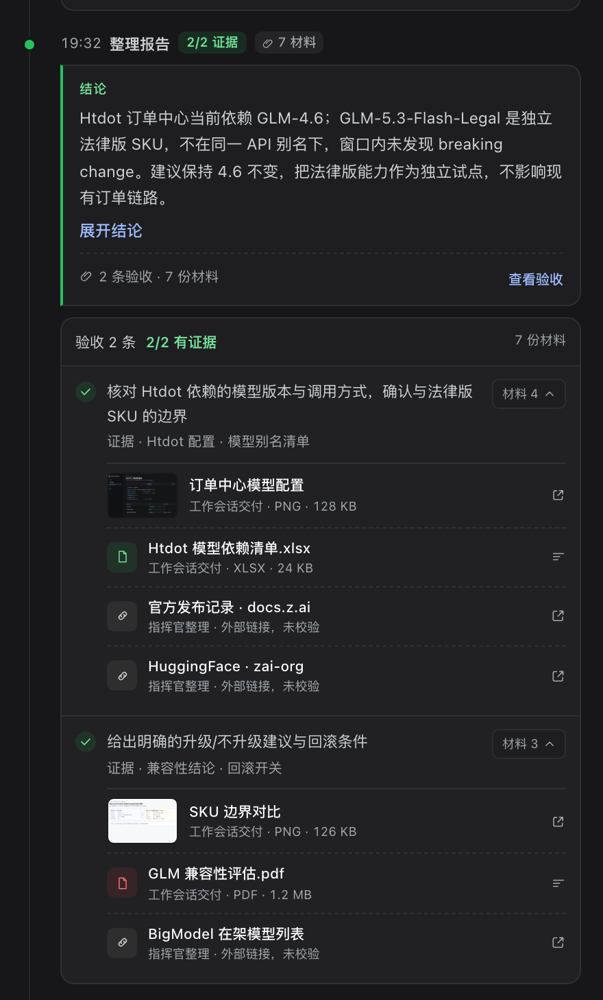

报告级材料
结论下统一材料区，验收项只挂 1–2 个 chips。

- 强：结论一眼有图有来源，适合先审结论。
- 弱：chips 只能放 1–2 个，逐条验收时要回上面找。
同样的结论、同样的 7 份材料，只改变「材料挂在哪」。两图都从同一份报告的「整理报告」开始，裁到验收结束。
结论下统一材料区，验收项只挂 1–2 个 chips。

每条验收项自带可折叠的材料表，材料跟着验收走。

| 维度 | A 报告级 | B 逐项 |
|---|---|---|
| 结论支撑 | 强：结论下直接看到 2 张图和来源 | 弱：结论只留计数，要往下滚 |
| 验收映射 | 弱：chips 只能覆盖 1–2 个 | 强：每条验收项自带完整材料表 |
| 图片可读性 | 强：2 列大缩略图，适合扫读 | 弱：行内 52×34 缩略图，只能当索引 |
| 跨项复用 | 无重复，一份材料只出现一次 | 同一材料在多个验收项下重复出现 |
| 无归属来源 | 有位置：报告级「补充来源」 | 没有自然位置，容易丢 |
| 页面高度 | 集中，较紧凑 | 随「验收项 × 材料」线性变长 |
| 数据模型 | 扁平 reportMaterials[] | 需要 acceptanceIds 或按项分组 |
| 最适合 | 结论审阅、多来源、材料跨项 | 逐条验收、材料少且边界清晰 |
保留报告级材料总览，让结论先有图有来源；每条验收项的 chips 点击后，在原地展开「本项材料」行内表。存储只存一份 material，用 acceptanceIds 关联，避免重复副本。